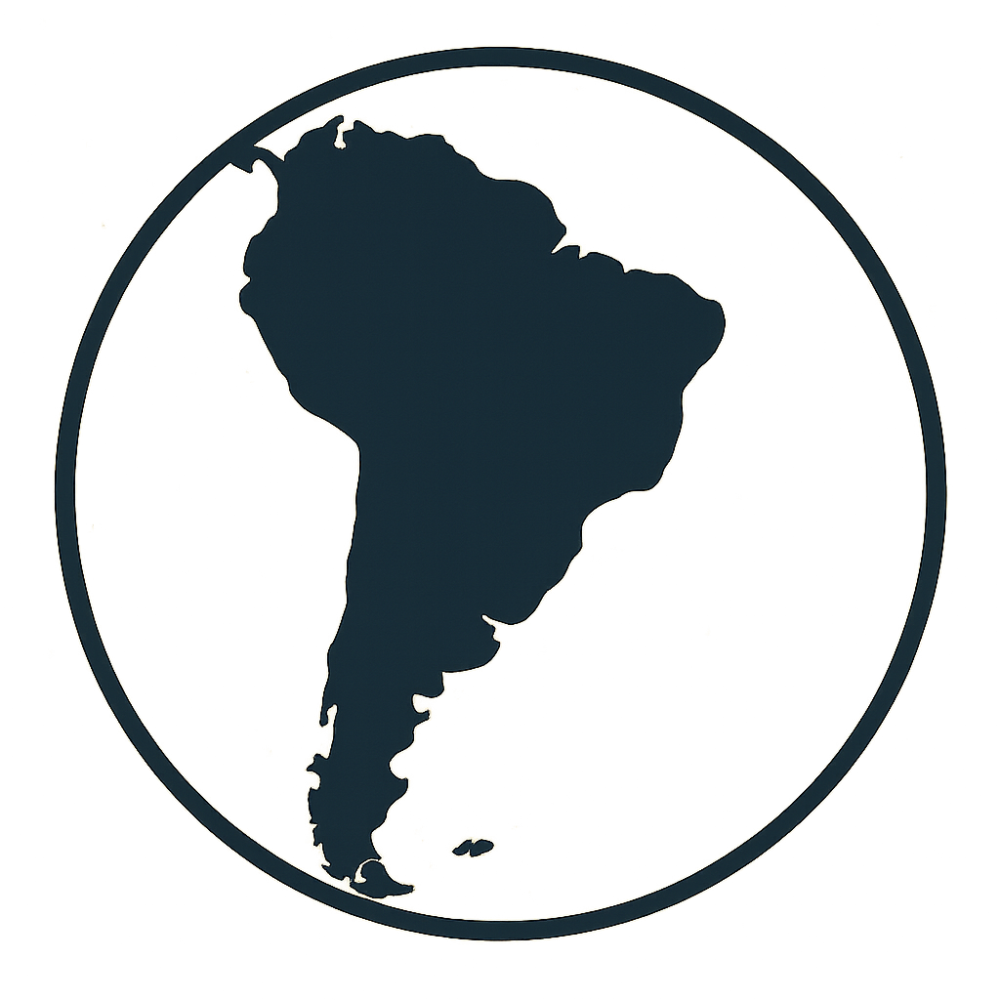

Étape 01 : Argentine

Le Trophée Jules Verne débute en Argentine, à El Durazno, pour un contre-la-montre individuel de 12,6 km. Sur un parcours relativement plat mais exposé au vent, les spécialistes du chrono auront une belle occasion de marquer les esprits dès la première étape.
Le tracé en aller-retour offre un profil roulant mais exigeant sur le plan du rythme. Le décor argentin et les premiers écarts promettent déjà une grande aventure.